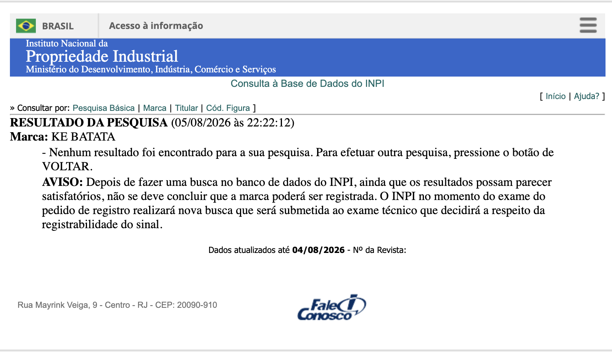

Rebranding Posicionamento e Estudo de Naming Da Hakuna Batata a uma Marca Própria
Menu Principal
Contexto do Projeto
A cliente possui uma operação consolidada há anos como franquia Hakuna Batata, localizada no shopping de Araxá.
O objetivo é deixar a franquia, eliminar os custos recorrentes de royalties e construir uma marca própria, mantendo toda a credibilidade conquistada ao longo dos anos.
O maior receio da cliente é a reação dos clientes diante da mudança de nome.
A estratégia do projeto será mostrar que o patrimônio construído não pertence ao nome da franquia, mas à experiência, ao atendimento, à qualidade e à confiança que ela construiu ao longo dos anos.
O rebranding será apresentado como uma evolução da empresa, e não como uma ruptura.
A História que Sustenta Tudo
A Kenia trabalha com alimentação há vinte anos. Antes de ser dona, ela já era a alma da operação, a gerente que tocava a unidade de Araxá praticamente sozinha. Quando a rede passou por dificuldade e havia contratos de lojas prestes a fechar, ela fez o movimento mais corajoso possível: em vez de sair, comprou a briga. Em 01 de abril de 2019 deixou de ser funcionária para virar proprietária.
Desde então ela carrega uma contradição silenciosa. O ponto é dela, a cozinha é dela, o atendimento é dela, o suor é dela, mas o nome e as regras sempre foram de outro. A franquia dava pouca assistência e recusava as sugestões de cardápio que ela, que vive de cozinha, sabia que fariam sentido. Mesmo assim ela adaptou o que pôde. Na prática, o cardápio de hoje já é muito mais a Kenia do que a franquia.
É por isso que este projeto não é uma reinvenção. É um reconhecimento. A marca nova não inventa nada, ela oficializa uma autoria que já existe há anos. Pela primeira vez, o negócio vai ter um nome que pertence a quem realmente o construiu. Essa é a espinha da narrativa, e é ela que vai dar emoção ao lançamento.
Resumo de Posicionamento
Uma marca de comida caseira, porções e pratos executivos, localizada no Shopping Boulevard de Araxá, feita pra receber bem. Aqui a comida é preparada de verdade na cozinha, com ingredientes e temperos frescos, no capricho de quem cozinha com amor. É esse cuidado artesanal que dá o sabor de comida caseira, aquele gosto que aquece e aconchega, e que faz toda a diferença.
A batata é o coração da marca, presente em praticamente todos os pratos e com variedade pra todos os momentos. Os pratos prontos e fartos do dia a dia, porções generosas pra dividir com a família e os amigos e a bebida gelada pra fechar um happy hour. Comida honesta, farta e a um preço justo, servida com o carinho de quem gosta de ver o cliente feliz.
Uma opção pra desacelerar, que transforma a batata num motivo pra aproveitar as pequenas coisas do dia e da vida.
Comida de verdade, feita na hora e servida com fartura, que faz você sair satisfeito e com vontade de voltar, sem pesar no bolso.
Decisões Estratégicas
Escolha estratégica a partir do posicionamento. A batata é o coração da marca, o fio que costura o cardápio inteiro e o elemento que o público já criou associação.
A marca nunca vendeu batata em si. Ela vende comida de verdade, farta e honesta, e usa a batata como fio condutor. O ícone e o consumo são coisas diferentes, e é justamente aí que mora a força: a batata dá o nome, a leveza e a memória afetiva, enquanto a comida de verdade dá a substância, a fidelidade e o faturamento.
A batata é assinatura da marca.
Território
O que é, o que não éA nova marca não é fast-food, não é batataria e não é boteco. Ela ocupa um território mais verdadeiro e mais defensável: o de cozinha brasileira honesta dentro do shopping. Comida de verdade, feita na hora, com tempero de comida caseira, servida com fartura e a preço justo, num ambiente descontraído onde a família se sente à vontade.
Valores
A marca acredita no simples bem feito. Comida honesta, sem complicação, do jeito que se faz em casa. Nada de frescura, só o que é bom de verdade.
Respeito com o cliente, com a comida e com o dinheiro de quem escolhe a casa. Cada pessoa é tratada com atenção e cada prato é feito com seriedade.
Tudo é preparado com cuidado na cozinha, com tempero fresco e capricho. O zelo aparece no sabor, no empratamento e até na embalagem.
Tudo é feito com ingredientes frescos e tempero caprichado, do jeito artesanal, comida de verdade pra aproveitar uma pausa na rotina ou um momento especial.
Comer bem não pode ser privilégio. A marca preza por fartura a um preço acessível, pra caber no dia a dia de quem trabalha e quer comer de verdade.
A marca é ponto de encontro, de reunião, de comemoração. Um lugar feito pra estar junto, onde a família e os amigos se sentem em casa.
Aqui todo mundo é recebido com sorriso e alto astral. A maior satisfação da casa é ver o cliente sair feliz, bem servido e com vontade de voltar.
Público
Prato-feito farto e caprichado a partir de vinte reais — arroz, feijão, batata, salada e proteína. Comida mineira de todo dia, pra matar a fome sem pesar no bolso do trabalhador, do lojista, do jovem em intervalo.
Porções generosas no sistema Para Nós e Para Todos — picanha, filé, recheadas, burgers e chopp gelado na caneca. A refeição vira encontro: aniversário, confraternização, sexta com os amigos.
Uma casa, dois ritmos. O almoço nutre, a noite celebra. Esse é o coração do posicionamento, e é o que impede a marca de ser só mais uma batataria ou só mais uma hamburgueria de praça de alimentação.
O público dessa marca é tão variado quanto o cardápio, e se organiza pelos dois tempos da casa. No almoço do dia a dia, quem chega é o trabalhador, o lojista do próprio shopping, o jovem no intervalo, gente que tem pouco tempo e quer comer bem sem gastar muito. Buscam uma refeição de verdade, farta e caprichada, que dê conta da fome e caiba no bolso. Já na noite e no fim de semana, a casa recebe outro momento da vida: a família que sai pra comemorar, o grupo de amigos que divide uma porção com o chopp gelado, o público mais adulto que quer relaxar e ficar à vontade. São ocasiões diferentes, mas todas giram em torno da mesma coisa: comida boa e a companhia de quem se gosta.
No fundo, é uma marca para todo mundo, sem deixar de ter personalidade. Ela fala com a família e com o trabalhador, com o jovem e com o cliente fiel de anos, e conversa com todos de igual pra igual, com afeto e sem frescura. O que une essas pessoas não é a idade nem o bolso, é o mesmo desejo simples: sentar, comer de verdade e sair satisfeito. É exatamente essa a maior alegria da casa, ver o cliente e a família saírem felizes, de barriga cheia e com vontade de voltar.
Personalidade
Esse tipo de público pede uma marca com simplicidade, bom humor e alto astral. E aqui vale um ponto importante: isso não é só um jeito de falar, é a personalidade da marca inteira, que precisa aparecer em tudo. No nome, nas cores, no símbolo, na embalagem, no atendimento e em cada post. Tudo comunica, e tudo precisa falar essa mesma língua, a língua do povão, sem palavra difícil e sem pose, como quem puxa papo e chama pra sentar na mesa.
Aquele que alimenta, acolhe e faz a pessoa se sentir em casa.
O lado povão no melhor sentido: honesto, acessível, sem pompa, que fala a língua de todo mundo.
Diferenciais
- Tempero: tudo é feito na cozinha, mais artesanal
- Comida mineira, familiar
- Todos os sanduíches artesanais
- Batata tradicional palito
- Atendimento com educação, sorriso, entrega correta, alto astral
- Empratamento caprichado
- Embalagem bem feita, produtos separados, cuidado na entrega (salão e delivery)
- Preço acessível
- Prato do dia como grande chamariz
- Cartão fidelidade (a cada 10, no sanduíche e na batata assada)
- Chopp na caneca gelada, marca Kaiser
- Pernil acebolado, costelinha ao molho barbecue, pratos/kits (ex: bife a cavalo, que hoje não tem)
- Sobremesa (ainda não existe)
- Novos sabores de batata assada: bife bovino e parmegiana
Decisões Estratégicas
O público mostra o caminho do nome. Uma marca que fala a língua do povão, que recebe o trabalhador no almoço e a família no fim de semana, não pode ter um nome complicado. O nome precisa ser à cara de quem ele serve: simples, claro e sem frescura.
E tem um cuidado a mais nessa escolha: o nome deve usar palavras ou combinações que já existem e que todo mundo já conhece. Uma palavra do dia a dia, que a pessoa escuta e entende na hora, sem precisar decifrar. Isso porque uma palavra conhecida já vem cheia de significado e sentimento na cabeça das pessoas, ela desperta uma imagem, uma memória, uma sensação familiar.
Estudo de Mercado
Todo Mundo é Concorrente
Antes de olhar os nomes, vale entender uma coisa sobre concorrência. No ramo de alimentação, o concorrente não é só quem vende o mesmo prato que você. É todo restaurante, lanchonete ou estabelecimento que vende comida, porque todos disputam a mesma decisão do cliente: a de onde comer hoje. Quando uma família resolve sair pra comer, ou quando alguém abre o aplicativo com fome, a batataria disputa a atenção com a pizzaria, com o japonês, com a marmita e com a hamburgueria ao mesmo tempo. A pergunta na cabeça do cliente não é "onde tem batata?", é "onde a gente vai comer?"
Afunilando: os Nomes com "Batata" em Araxá
- Hakuna Batata — a operação atual
- Potato Chef / Potato Chef Gourmet (@potato_chefoficial) — "a melhor batata", batata assada, delivery
- Batata Recheada Dona Cheffa — batata recheada artesanal
Entre todas, a Hakuna Batata (a operação atual) é justamente a que mais se diferencia, porque é a única que combina a batata com um cardápio de pratos prontos e executivos no almoço, além das porções e dos hambúrgueres. Ou seja, dentro do universo das batatas de Araxá, essa operação já ocupa um espaço mais amplo e mais completo que as concorrentes. Ela não é só uma batataria de delivery noturno, é uma casa de comida de verdade que serve o dia inteiro, do prato do almoço à porção da noite.
Decisões Estratégicas
O nome precisa ser fácil de falar, fácil de encontrar, carregado de sentimento familiar e grande o bastante pra caber um universo de marca inteiro.
O Estudo dos Nomes
A partir das três decisões, um estudo aprofundado de nomes foi conduzido para chegar às melhores opções. Não se tratou de escolher nomes bonitos, e sim de encontrar nomes que funcionassem de verdade, aprovados em uma série de critérios rigorosos. Cada ideia apresentada a seguir passou por esse filtro.
Um Nome Simples, Sonoro e que Gruda
Batata & Brasa nasce de uma dupla que soa bem no primeiro instante. As duas palavras começam com o mesmo som, o "B" forte, e essa repetição cria uma musicalidade natural que gruda no ouvido. É o mesmo recurso por trás de nomes que a gente nunca esquece, como Coco Bambu. O nome tem ritmo, tem batida, e é curto o bastante pra ser dito de uma vez só, sem esforço. Fala em voz alta e sente: Batata e Brasa. Rola fácil, soa gostoso e fica na cabeça sozinho.
Uma Palavra que Todo Mundo já Entende
Ninguém precisa explicar o que é brasa. É uma das palavras mais familiares e apetitosas da comida brasileira. Brasa é o fogo que assa, é o cheiro que abre o apetite, é o ponto certo da carne, é o calor do preparo feito com cuidado. Ao ouvir "brasa", a pessoa já sente na hora o aconchego de comida quente e bem-feita. O nome não precisa de tradução nem de esforço, ele comunica sozinho, na linguagem que o público já domina. É a palavra do dia a dia carregando o afeto que já existe.
Estudo de Viabilidade
A viabilidade do nome foi verificada em três frentes: a busca por registro de marca no INPI, na classe de serviços de alimentação, a pesquisa de concorrentes do mesmo nicho em Araxá e região, e a disponibilidade de perfil e domínio no digital.
Análise do Nome "Brasa" em Araxá e Região
A busca por estabelecimentos que usam a palavra "brasa" no nome mostrou um cenário favorável. Em Araxá, existe o Brasa Casa Rústica, um restaurante no bairro São Geraldo que trabalha com marmitex. Apesar de compartilhar a palavra "brasa", ele não tem nenhuma relação com o universo da batata nem com o mesmo tipo de proposta, o que afasta o risco de confusão entre as marcas. São públicos e conceitos diferentes, então a coexistência não representa problema.
Em Belo Horizonte, foi identificado um estabelecimento que usa "batata" e "brasa" juntos, porém apenas no nome de um prato do cardápio, e não como nome do restaurante. Não se trata de uma marca com esse nome, e não há registro relacionado, o que significa que a expressão não está protegida nem apropriada por ninguém como marca. Portanto, também não há impedimento por esse lado.
Em resumo, a combinação "Batata & Brasa" não encontra concorrente direto nem registro que a impeça. A palavra "brasa" aparece na região de forma isolada e em contexto diferente, sem gerar conflito com a proposta da nova marca.
Prints do INPI e da disponibilidade de perfil/domínio.
Como o Nome se Usa no Dia a Dia
Na prática, o nome funciona tanto no jeito completo quanto no apelido natural que o cliente vai criar. A marca é a Batata & Brasa, mas na boca do povo vira "a Brasa", como em "vou ali na Brasa" ou "bora pra Batata & Brasa". O nome aceita o carinho da abreviação sem perder a identidade, e é isso que faz um lugar virar ponto na cidade. O artigo cai natural, a gente fala "a Brasa", "lá na Brasa", do mesmo jeito espontâneo que se fala de um lugar querido de sempre.
O Universo de Marca
Batata & Brasa vive no território do calor honesto. É a antítese do congelado da praça de alimentação: aqui a comida tem fogo, tem cheiro, tem vida. O nome carrega os dois tempos da casa. No almoço, a brasa é a cozinha viva que capricha no prato do trabalhador. À noite, a brasa é o programa, a picanha na mesa, o chopp gelado, a roda de amigos. A personalidade que nasce daí é calorosa, farta e sem frescura, com o sorriso de quem gosta de receber. Se a marca fosse uma pessoa, seria o dono do lugar que te chama pelo nome, capricha na porção e ainda puxa conversa. O visual pode explorar o quente, o dourado, o aconchego do fogo, tudo o que dá água na boca antes mesmo do prato chegar.
Naming do Cardápio, Conexões e Slogans
O universo da brasa organiza o cardápio inteiro com naturalidade, dando nome próprio a cada linha.
Os pratos executivos do dia a dia podem virar Na Brasa do Dia. As porções da noite viram Brasa Braba (a de dividir com os amigos). As carnes nobres, como a picanha e o filé, viram Alta Brasa. As batatas recheadas viram Batata na Brasa. E o chopp e as bebidas geladas viram Pra Refrescar a Brasa, criando um contraste gostoso entre o quente da comida e o gelado da bebida.
"Comida de verdade, no calor da brasa."
"Aqui, tudo passa pela brasa."
"Da batata à brasa, comida de verdade."
O mascote pode ser uma batata simpática com um toque de brasa, um rubor quente nas bochechas, farta e sorridente, pronta pra receber.
Um Nome Simples, Sonoro e que Gruda
Kê Batata nasce de uma reação, aquele "que batata!" que escapa quando a comida é boa demais. É uma expressão que o brasileiro já fala sem pensar, e é exatamente por isso que o nome gruda de primeira.
Do outro, é o Kê de Kenia. E não é um detalhe bonitinho, é o coração da história. Durante anos, a Kenia foi a alma dessa cozinha sem que o nome fosse dela. Ela cozinhou, atendeu, cresceu e sustentou um negócio que sempre levou a marca de outro. Colocar o Kê dela no nome é, enfim, marcar a sua autoria.
Tem o mesmo segredo que fez o nome antigo funcionar: a musicalidade, o ritmo, o jeito de expressão pronta que já vive na boca das pessoas. É curto, é leve, é divertido, e se fala num sopro. A grafia com Kê, escrita assim de propósito, dá o toque moderno e a personalidade que transformam uma frase comum numa marca de verdade. Fala em voz alta e sente: Kê Batata. Sai fácil, soa alegre e fica na cabeça na primeira vez.
Uma Expressão que Todo Mundo já Usa
Ninguém precisa aprender o que "que batata" quer dizer, porque todo mundo já fala assim. É a exclamação natural de quem gostou, de quem se surpreendeu, de quem provou algo bom. O nome pega uma reação que já existe na vida das pessoas e a transforma em marca, o que faz ele soar familiar desde o primeiro segundo. E tem uma camada a mais, escondida e poderosa: o Kê é também a inicial da Kenia. É o Kê de quem faz a comida, de quem construiu essa história. Sem que ninguém precise explicar, o nome carrega a dona dentro dele, e isso amarra a marca à pessoa que lhe deu vida.
Estudo de Viabilidade
A viabilidade do nome foi verificada nas três frentes: a busca por registro de marca no INPI na classe de serviços de alimentação, a pesquisa de concorrentes do mesmo nicho em Araxá e região, e a disponibilidade de perfil e domínio no digital.
Não existe registro no INPI!!
Obs.: a busca não encontrou registro nem com "KE" (sem acento) nem com "KÊ" (com acento) — as duas grafias de KE/KÊ BATATA estão livres.

Print da busca no INPI.
Sobre a concorrência local, há apenas um ponto de atenção, e ele é pequeno. Existe em Araxá a Ki Batatas Keila, que trabalha com batata assada por delivery em conjunto com uma pizzaria. Apesar da sonoridade parecida, não se trata de um concorrente direto no mesmo território: é uma operação de delivery, sem proposta de restaurante, com posicionamento fraco e sem construção de marca. A diferença de conceito, de estrutura e de força entre as duas é grande o suficiente para que não haja confusão.
Como o Nome se Usa no Dia a Dia
Na prática, o nome é curtíssimo e cai fácil na boca. A pessoa fala "vou no Kê Batata" ou simplesmente "vou no Kê", e a marca já vira apelido carinhoso na hora. O Kê aceita o artigo com naturalidade, "lá no Kê", "aqui no Kê Batata", do mesmo jeito espontâneo que se fala de um lugar de sempre. E tem um bônus raro: a grafia estilizada, além de moderna, deixa a marca fácil de reconhecer visualmente. Uma vez visto, o Kê não se esquece.
Naming do Cardápio, Conexões e Slogans
O maior diferencial do Kê Batata é que ele não é só um nome, é uma linguagem inteira. O "Kê" vira um sistema que organiza e batiza tudo, com a mesma alma divertida.
Os pratos executivos do almoço podem virar Kê Prato. As porções da noite viram Kê Porção. As carnes na brasa viram Kê Brasa (e repare que o universo da brasa, tão forte na comida, cabe aqui dentro como uma parte do todo). O prato do dia vira Kê Segunda, o combo de fim de semana vira Kê Sábado, o chopp e as bebidas viram Kê Gelada. Tudo conversa, tudo tem a mesma cara, e o cardápio inteiro ganha identidade própria sem depender de nada do passado.
"Kê Batata, kê delícia!"
"Deu fome? Kê Batata."
O mascote pode ser a batatinha Kê, de olhos arregalados e sorriso animado, sempre reagindo com um "Kêêê!" diante do prato. Expressiva e divertida, perfeita para as redes sociais, para a criançada e para virar o rosto querido da marca.
Um Nome Simples, Acolhedor e Fácil de Falar
Kasa da Batata é o nome mais aconchegante dos três, e o que mais fala direto ao coração. "Casa" é uma das palavras mais simples e afetuosas que existem, todo mundo entende e sente na hora. O nome rola fácil na boca e vira apelido na mesma hora: "vou na Kasa", "bora na Kasa da Batata". A grafia com K dá o toque de personalidade e modernidade, sem atrapalhar a leitura, porque a pessoa lê "casa" naturalmente. É um nome que soa como um convite, caloroso e sem nenhuma dificuldade, do tipo que a pessoa fala uma vez e já não esquece.
Uma Palavra que Aquece na Hora
Ninguém precisa pensar pra entender o que "casa" significa. É a palavra do aconchego, do pertencimento, do lugar onde a gente se sente bem. Ao ouvir "Kasa da Batata", a pessoa já sente o acolhimento antes mesmo de entrar, porque a palavra carrega tudo isso naturalmente. E ela tem uma força dupla: é a casa como aconchego, a comida caseira, o sentir-se em casa, e é a casa como referência, o lugar oficial da batata na cidade, do mesmo jeito que se fala "a casa do pão de queijo" ou "a casa da picanha". O nome acolhe e posiciona ao mesmo tempo, dizendo que ali é A casa da batata em Araxá.
Estudo de Viabilidade
Prints da pesquisa de INPI, redes e domínio.
A viabilidade do nome foi verificada nas três frentes: a busca por registro de marca no INPI na classe de serviços de alimentação, a pesquisa de concorrentes do mesmo nicho em Araxá e região, e a disponibilidade de perfil e domínio no digital.
Sobre a concorrência local, não foi identificado em Araxá nenhum estabelecimento com esse nome, o que deixa o caminho livre na cidade. É importante saber, porém, que "Casa da Batata" é uma construção usada em outras cidades do país, por ser um formato natural de nome. É justamente aí que entra a força da grafia com K: escrever Kasa, e não Casa, dá à marca uma identidade própria e uma escrita distinta, o que ajuda tanto a diferenciar de qualquer homônimo quanto a proteger o registro. Por esse motivo, a recomendação é registrar a marca já na forma estilizada, com o K, e verificar a disponibilidade considerando essa grafia específica.
Como o Nome se Usa no Dia a Dia
Na prática, o nome funciona lindamente tanto completo quanto abreviado. A marca é a Kasa da Batata, mas na boca do cliente vira "a Kasa", como em "vou almoçar na Kasa" ou "encontra a gente na Kasa da Batata". O artigo cai natural e carinhoso, e a palavra "casa" já traz embutida a ideia de lugar, de ponto, o que faz o nome virar referência com facilidade. É o tipo de nome que a pessoa usa como se falasse de um lugar querido de sempre, porque a própria palavra já sugere isso.
O Universo de Marca
Kasa da Batata vive no território do aconchego e da autoridade. É o mais afetivo dos três, e traduz com perfeição a ideia de comida caseira, feita com cuidado, num lugar que recebe bem. A grande ideia é simples e poderosa: aqui não é um ponto qualquer de praça de alimentação, é uma casa. Um lugar onde a comida é de verdade, o atendimento recebe como quem recebe visita, e a mesa é farta como um almoço de família. A personalidade que nasce daí é calorosa, acolhedora e caseira, com um toque moderno no visual por conta do K. E há uma vantagem estratégica enorme para o futuro: "Kasa" escala com naturalidade para franquia. Do mesmo jeito que existem redes conhecidas construídas sobre a ideia de "casa", cada nova unidade é mais uma Kasa da Batata, o que faz o nome já nascer pensado para crescer e chegar a outras cidades.
Naming do Cardápio, Conexões e Slogans
A palavra "casa" organiza o cardápio inteiro com naturalidade, porque tudo pode pertencer à Kasa.
Os pratos executivos do almoço podem virar Prato da Kasa, o prato-feito caseiro do dia a dia. As porções da noite viram Mesa da Kasa, as de dividir com a turma. A batata assinatura vira Batata da Kasa, a especialidade. O cartão fidelidade vira Gente da Kasa, o clube de quem é de casa. O combo de fim de semana vira Domingo na Kasa, e a receita especial vira Segredo da Kasa. Tudo pertence à Kasa, e isso cria uma linguagem afetuosa e coerente do começo ao fim.
"Aqui, você é de casa."
"A Kasa da Batata é sua."
"Comida de verdade, comida de casa!"
O mascote pode ser uma batatinha acolhedora, com um jeitinho de quem recebe de braços abertos, talvez com um avental caseiro, transmitindo o calor de um lar.
Outros Nomes Estudados
Estes nomes fizeram parte do processo criativo, alguns foram descartados por já terem registro, por não atenderem aos critérios definidos ou por não traduzirem bem a essência da marca. Ficam registrados como inspiração, caso nenhuma das três opções principais seja a escolhida.
Já possui registro no INPI e gera confusão com a Gran Milho, empresa grande de Araxá, parecendo mais indústria do que restaurante.
Não tem registro, traz autoria e é fácil de lembrar. Ficou como alternativa de reserva.
Sonoridade ótima, mas já possui registro no INPI.
Não tem registro, mas já existem outros restaurantes com "lenha" no nome, e não fica tão alinhado com a linguagem moderna da marca e do shopping.
Criativo e diferente, não tem registro. Ficou como alternativa de reserva.
Criativo e diferente, não tem registro. Ficou como alternativa de reserva — une os dois universos, do Kê e da Brasa.
Próximos Passos
Apresentação e avaliação dos caminhos de nome construídos a partir dos critérios definidos nesta plataforma, para escolha e refinamento com a Kenia.
Retirar dúvida e ajustes relacionados ao posicionamento, garantindo que tudo esteja alinhado antes de seguir pro visual.
Levantamento de referências visuais a partir do nome escolhido, pra guiar a direção estética da marca.
Construção da marca visual — logotipo, cores e aplicações — a partir do nome escolhido e das referências definidas.
A prévia de identidade visual é entregue em aproximadamente 10 dias úteis após a definição do nome.